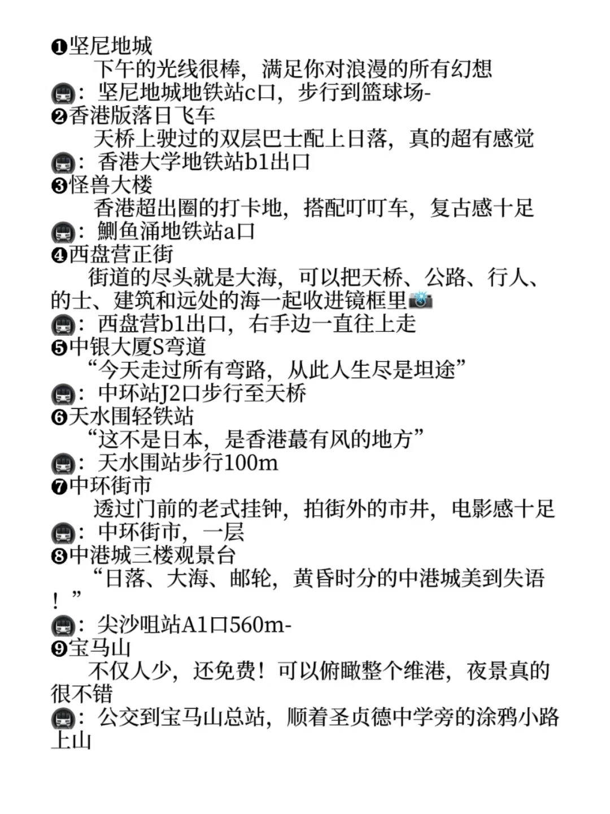
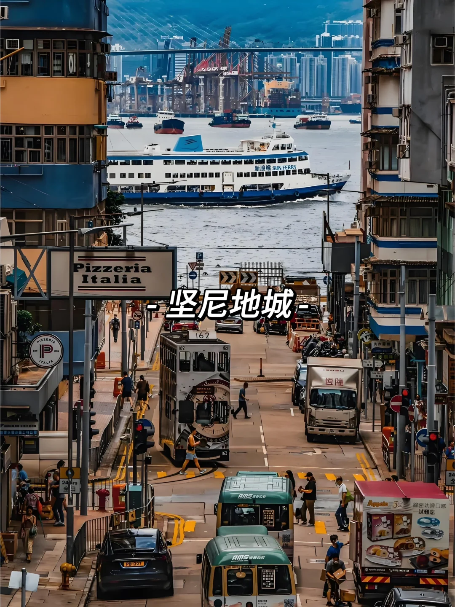
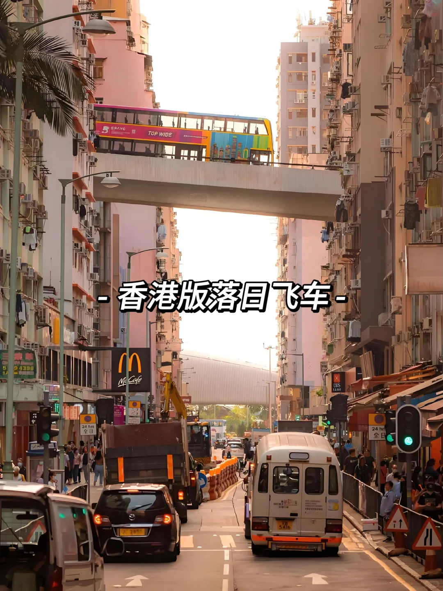

<!DOCTYPE html>
<html>
<head>
  <meta charset="utf-8" />
  <title>KML Viewer</title>
  <meta name="viewport" content="width=device-width, initial-scale=1.0">
  <link rel="stylesheet" href="https://unpkg.com/leaflet/dist/leaflet.css" />
  <style>
    #map { height: 100vh; }
  </style>
</head>
<body>
  <div id="map"></div>

  <script src="https://unpkg.com/leaflet/dist/leaflet.js"></script>
  <script src="https://unpkg.com/leaflet-plugins/layer/vector/KML.js"></script>

  <script>
    const map = L.map('map').setView([22.3, 114.17], 13);

    L.tileLayer('https://{s}.tile.openstreetmap.org/{z}/{x}/{y}.png', {
      attribution: '© OpenStreetMap contributors'
    }).addTo(map);

    const centralImgs = [
      "datas/media_datas/留港小文成长记_66378fcd0000000003033a10/香港｜这9个经典拍照机位一定要拍！_66d83d48000000001e019ceb/image_0.jpg",
      "datas/media_datas/留港小文成长记_66378fcd0000000003033a10/香港｜这9个经典拍照机位一定要拍！_66d83d48000000001e019ceb/image_3.jpg"
    ];
    let centralIndex = 0;
    function nextImage(id) {
      centralIndex = (centralIndex + 1) % centralImgs.length;
      document.getElementById(id + '-img').src = centralImgs[centralIndex];
    }

    const centralPopup = `
      <h3>Central</h3>
      <div id="central-carousel">
        <br>
        <button onclick="nextImage('central')">下一张</button>
      </div>
    `;
    L.marker([22.2799907, 114.1587983]).addTo(map).bindPopup(centralPopup);

    L.marker([22.2776827, 114.1591909]).addTo(map)
    .bindPopup(`<h3>The Peak Tram</h3>`);

    L.marker([22.2795001, 114.1740088]).addTo(map)
    .bindPopup(`<h3>告士打道</h3>`);

    L.marker([22.3297069, 114.1750423]).addTo(map)
    .bindPopup(`<h3>中华基督教礼贤会九龙堂</h3>`);

    // ✅ 正确方式：传入 KML 文件路径，而不是 XML 对象
    const track = new L.KML("your_map.kml");
    map.addLayer(track);
    map.fitBounds(track.getBounds());
  </script>
</body>
</html>